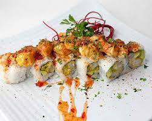

Sushi

Description
Stuffed with crunchy shrimp tempura,
creamy avocado, and spicy Japanese mayonnaise,
this Shrimp Tempura Roll is a delicious cooked s
ushi recipe you can make at home.
Ingredients
- Sushi rice
- Nori
- Shrimp
- Flour
- avocado
- Lettuce
- mayonnaise
- Mustard
- Tobiko
Steps
- Lay the bamboo sushi rolling mat on a cutting board
with bamboo strips going horizontally from you.
Cover the bamboo with a piece of plastic wrap.
Put a sheet of dried seaweed on top of the mat,
shiny side down. Spread cooked rice on top of the seaweed
in a thin layer and press firmly.
- Turn the sushi layer over so that the seaweed is on top.
Place shrimp tempura, avocado and cream cheese lengthwise
at the top of the sheet on the seaweed, not on top of the rice.
Roll the bamboo mat forward, pressing the ingredients inside the
cylinder-shaped sushi (the KEY is to roll it TIGHT). Press the bamboo
mat firmly with hands, then remove the rolled sushi. For further
rolling instruction, see the video below.
- Roll the roll in flour then dip entire rice roll
in tempura batter and deep fry (oil heated to 350-degrees)
or about 3 minutes or until batter turns crispy and golden
brown (you DON'T need to do this in a deep fryer. You can
just do about ½ cup – 1 cup of oil in a frying pan and
keep turning the roll until it is golden brown on all
sides). Remove from oil and let cool for a few minutes.
With a VERY sharp knife, cut the sushi roll into 4-5 pieces.
Top with spicy mayo.